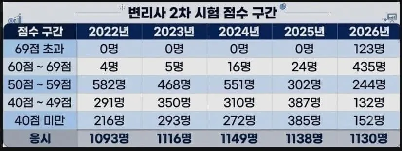

올해 재야의 고수들이 출몰했나요?
정규분포가 통째로 이동했네

올해 재야의 고수들이 출몰했나요?
정규분포가 통째로 이동했네
난이도 조절 실패일까? 아니면 집단 ai인가
이 정도면 문과 전문직 시험은 다 뚫렸다고 봐야, 말이 안되는 수준이네
고냥 필기시험이 와르르~
오히려 저렇게 통째로 이동하면 걍 시험이 ㅈㄴ 허벌로 나왔다는 소리인데
ㅇㅇ 오히려 정규 분포가 깨지고 이상값이 수두룩하게 뜨면
그게 ai치팅 논할만한건데
저긴 존나 어렵게 나와도 교수들이 "걍 평균 60으로 하죠" 라고 할수도 있고, 존나 쉽게 나와도 "걍 평균 40으로하죠" 라고 할 수도 있음
난이도랑 점수평균이랑 표준편차랑 관련이 없어
점수평균은 상관이 있지...?
똑같은 난이도여도 채점자에 따라 점수가 달라진다는 말임
와 시발...ㅋㅋㅋ 저정도면 확률적 유연은 절대 아니고.
Ai 발전하는 단계대로 고점자가 늘었네.. ㅋㅋㅋ
60-69점구간: 적당히 틀리면서 똑똑하게 써야지 x 400명
ㄴㄴ 쟁점 다 맞추고 잘써야 저 점수임
병신새끼들 다 걸려서 좆됐으면 좋겠네
근데 아무리 부정행위가 많아도 응시자수가 비슷하니 저럴수는 없을거같은데 ㅇ
시발 대한민국 시험판이 플라잉더치맨이냐고 수평선 기준으로 뒤집어짐?
공시에는 얼마나 많았을까 십 ㅋㅋㅋㅋㅋ

변리사 2차 시험은 주관식 아님?
내 기억으론 주관식 상대 평가라서 객관식처럼 답을 조절 해서 쓰기 힘들거 같은데?
누가 안들키냐 싸움일듯
저건 시험이 쉬웠던 거지
세상은 어찌 나를 낳고 변리냥이 123명을 낳으셨는가! 원통하다!
근데 59점 미만도 똑같이 빠진거보면 난이도 조절 실패 같기도 하고
저정도로 균일하게 성적이 오른거면 거의 대다수가 치팅을 해야 가능한거 아녀?
"지능의 외주화"
지난 4년간 난이도 잘 유지해오다가 유독 올해부터 난이도 물로 내는 시험들이 왜캐많냐 ? ㅎㅎㅎㅎㅎ
근데 인원 추가가 아니러 상위권이 위로 올라간거 보면 그냥 난이도 조절 실패같은데
정규분포가 통으로 움직이면 걍 시험이 쉽게 나온거 아님??
변리사 시험 과목이 특허법, 상표법, 민사소송법, 선택과목까지 총 4개이고, 저거는 민사소송법 점수임.
특허법 60점 이상 득점자는 1명, 상표법 60점 이상 득점자는 2명임.
민사소송법 점수 저래도 평균 60점 넘는 사람이 40명 정도 밖에 안됨. 저거는 민소가 쉽게 나온거지.
24년도부터 쓰기 시작했네 ㅋㅋ
60점 초과인원들
싹다 구매이력 봐야겟네 ㅋㅋ
일단 쟤네는 전수조사되긴하겠네
이야 시험이 역대급 물이었나?
40점 미만, 50점 미만도 같이 줄어든거 보면 그냥 난이도 문제 아닌가...
변리사 2차 시험에 실제로 냥이가 있었는지는 모르지만
저것만 가지고 의심하는건 선동임
걍 채점기조가 널널하게 바뀐걸로 보는게 맞는거같은데
와..
시험이 쉬웠을듯
올 연말은 ㅂㅅ숙청의 시간이구나